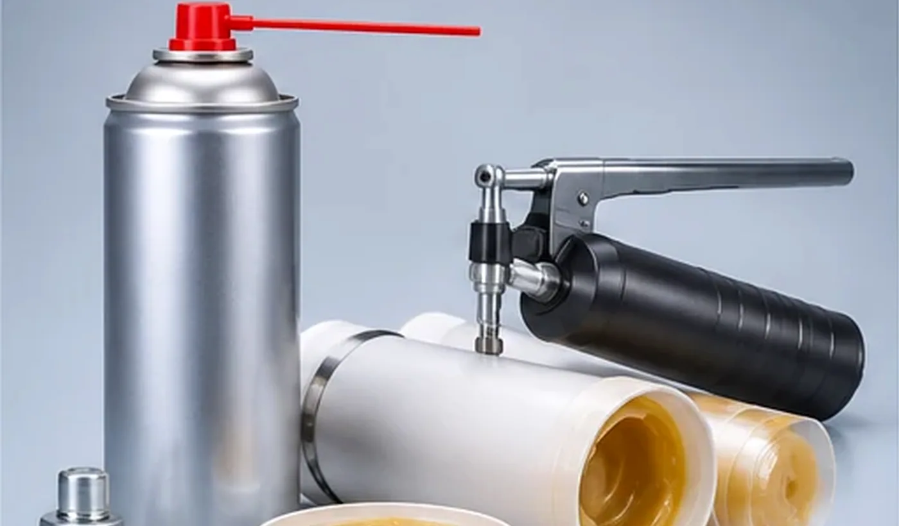
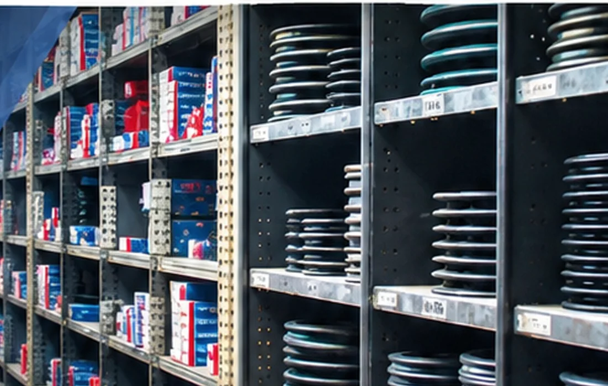

Les principales étapes du développement de LEFRANC depuis sa fondation en 1913 à Calais.
Découvrir notre expertise ↗Création à Calais par Émile François LEFRANC, atelier de mécanique.
Ouverture du magasin de distribution d’organes de transmission.
Reconstruction et direction assurées par Émile Félix LEFRANC.
Développement technique et assemblage de tuyauteries hydrauliques.
Création de LEFRANC Dunkerque.
Ouverture de LEFRANC Lille et développement régional.
Développement de la technologie pneumatique.
Certification du système qualité selon ISO 9002.
Création de la marque ARTÈRE et du site internet.
Création de l’atelier de translation linéaire L.T.L.
Création de THORAX et développement d’ateliers spécialisés.
LEFRANC Lille devient LEFRANC Métropole à Wambrechies.
Inauguration de LEFRANC SAS GULF à Dubaï.

Un besoin de maintenance, de fourniture technique ou d’accompagnement ? Contactez la compagnie LEFRANC.